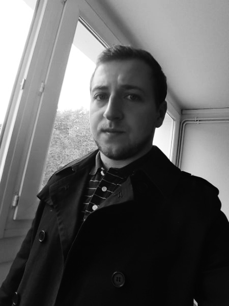

présentation
{kind=link}
Né dans le sud Avesnois (Nord, France), le 09 Janvier 1992, j'ai suivi de 2012 à 2015 des études en infographie.
Actuellement en formation au sein de la PopSchool je suis à la recherche d'un stage, et donc à l'écoute des conseils. Aimant voyager, je suis toujours à la recherche de point de vue et de jeux de lumière intéressants.
formations
Developper Web et Application mobile / 2017 - 2018 /
PopSchool, Valenciennes, France
Formation d'apprentissage des languages de développement et programmation
Techniques Infographiques / 2013 - 2015 /
Haute Ecole Albert Jacquard, Namur, Belgique
2eme année spécialisation Architecture et Motion Design
Graduat section Infographie / 2011 - 2012 /
Haute Ecole Albert Jacquard, Namur, Belgique
1ère année de préparation et de découverte des métiers de l'infographie
Licence Informatique / 2010 - 2011 /
Université des Sciences et Technologies, Villeneuve d'Ascq, France
1ère année de licence informatique
Etudes secondaires / 2007 - 2010 /
Cité scolaire Camille Claudel, Fourmies, France
Obtention du baccalauréat scientifique option sciences de l'ingénieur
compétences


expériences
Aide au développement numérique (Service Civique) / Mai - Nov 2016 /
Parc Naturel Régional de l'Avesnois, Le Quesnoy, France
Réalisations et mises en pages (affiches, flyers, panneaux, calicots, ...), montages vidéo, charte stratégie facebook, illustration "Défi Familles à énergie positive" et réalisation exposition sur la transition énergétique ainsi que 600 photographies du territoire.
Designer logo 3D / Oct 2015 /
AFPA, Reims, France
Création bénévole d'un logo 3D sur Cinema4D pour une promotion de formateurs professionels.